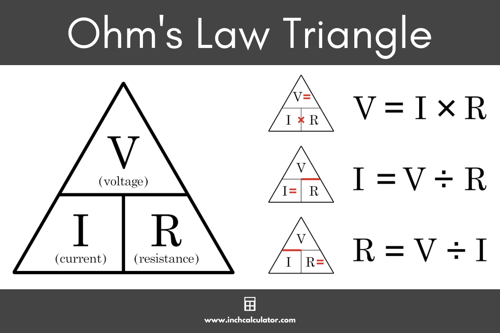

Ohm's Law
Fundamentals
Ohm's Law states that in a perfect circuit, the electric curent between tro points is directly proportional to the Voltage (or potential difference) across the two points. Introducing the constant of proportionality, the resistance, one gets V=IR. On fewer words, Voltage = Current * Resistance. This means that if you increase the voltage, the current will also increase, and if you increase the resistance, the current will decrease. https://en.wikipedia.org/wiki/Ohm%27s_law (information source, Wikipedia)
Uses
The formula is used in many applications, such as calculating the current in a circuit, determining the resistance of a material, and finding the voltage. It is also used in the design of electrical circuits and in the analysis of electrical systems.
Formulas Rearrangements
The formula can be rearranged to find the current or the resistance. The rearrangements are as follows:
- V = I * R
- I = V / R
- R = V / I
- https://byjus.com/physics/ohms-law/ (image source)

Calculator
This is a calculator that can be used to calculate the voltage, current, or resistance in a circuit. It is based on Ohm's Law and can be used to find the unknown value when the other two values are known. These are the instructions on how to use the calculator:
- Use numbers only, do not enter any letters or special characters (this inclused SI prefixes).
- For your unknown value, enter 0.
- Click the "Start" button to begin.
- Click on the buttons (voltage, current or resistance) to assign each a value.
- Then click on the "Calculate" button and the result will be calculated and displayed.
- To reset the calculator, click the "Reset" button.